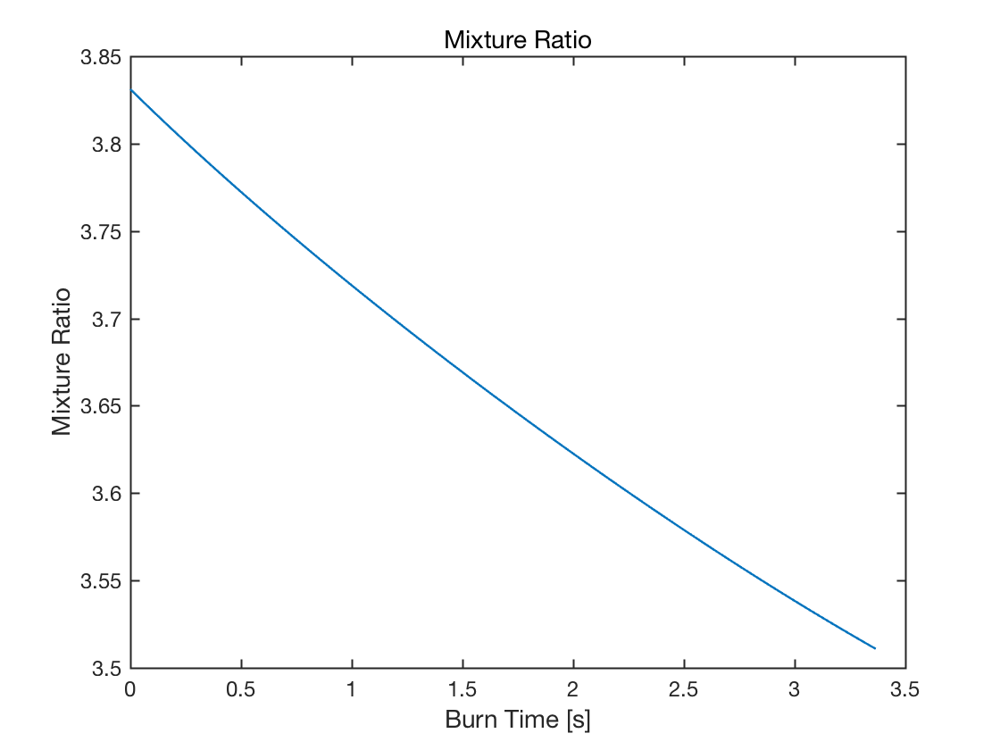
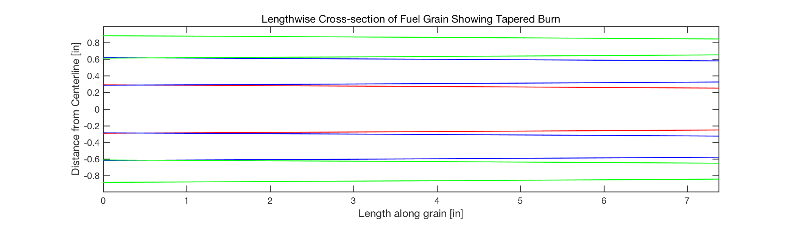

clear all;
close all;
N = 100;
M = 100;
[CA, SA, mdot_O2, mdot_f, iRingD, oRingD, centerD, numHoles, t_f] = doubleCircleAreaFun(N, M);
phi = mdot_O2 ./ mdot_f;
figure(2)
plot(linspace(0,t_f, N), phi)
title('Mixture Ratio')
xlabel('Burn Time [s]')
ylabel('Mixture Ratio')
centerD = centerD ./ .0254;
iRingD = iRingD ./ .0254;
oRingD = oRingD ./ .0254;
IR = .0115/.0254;
OR = .019/.0254;
l = linspace(0, 7.375, 99)';
FigHandle = figure(3);
set(FigHandle, 'Position', [100, 100, 1049, 300]);
for i = 1:size(centerD,1)
plot(l, centerD(i,1:M-1)'/2, 'r', 'LineWidth', 2)
axis manual
axis equal
axis([0 7.375 -.9975 .9975])
xlabel('Length along grain [in]')
ylabel('Distance from Centerline [in]')
title('Lengthwise Cross-section of Fuel Grain Showing Tapered Burn')
hold on
plot(l, -centerD(i,1:M-1)'/2, 'r', 'LineWidth', 2)
hold on
plot(l, (iRingD(i,1:M-1)'/2)+IR, 'b', 'LineWidth', 2)
hold on
plot(l, (-iRingD(i,1:M-1)'/2)+IR, 'b', 'LineWidth', 2)
hold on
plot(l, -((iRingD(i,1:M-1)'/2)+IR), 'b', 'LineWidth', 2)
hold on
plot(l, -((-iRingD(i,1:M-1)'/2)+IR), 'b', 'LineWidth', 2)
hold on
plot(l, (oRingD(i,1:M-1)'/2)+OR, 'g', 'LineWidth', 2)
hold on
plot(l, (-oRingD(i,1:M-1)'/2)+OR, 'g', 'LineWidth', 2)
hold on
plot(l, -((oRingD(i,1:M-1)'/2)+OR), 'g', 'LineWidth', 2)
hold on
plot(l, -((-oRingD(i,1:M-1)'/2)+OR), 'g', 'LineWidth', 2)
hold off
pause(0.03)
end
pause(1)
IR = .008/.0254;
OR = .019/.0254;
iRingDrl = [.34, .325];
oRingDrl = [.257, .23];
FigHandle4 = figure(4);
set(FigHandle4, 'Position', [100, 100, 1049, 300]);
axis manual; axis equal; axis([0 7.375 0 .9975]); xlabel('Length along grain [in]'); ylabel('Distance from Centerline [in]'); title('Lengthwise Cross-section of Fuel Grain Showing Tapered Burn'); hold on;
plot(l([1,end]), ( iRingDrl'/2) +IR, 'r', 'LineWidth', 2); hold on;
axis manual; axis equal; axis([0 7.375 0 .9975]); xlabel('Length along grain [in]'); ylabel('Distance from Centerline [in]'); title('Lengthwise Cross-section of Fuel Grain Showing Tapered Burn'); hold on;
h1 = plot(l([1,end]), ( -iRingDrl'/2) +IR, 'r', 'LineWidth', 2); hold on;
plot(l([1,end]), ( oRingDrl'/2) +OR, 'r', 'LineWidth', 2); hold on;
plot(l([1,end]), ( -oRingDrl'/2) +OR, 'r', 'LineWidth', 2); hold on;
h2 = plot(l([1,end]), ( iRingD( N-1,[1,M-1])'/2) +IR, 'b:', 'LineWidth', 2); hold on;
plot(l([1,end]), ( -iRingD( N-1,[1,M-1])'/2) +IR, 'b:', 'LineWidth', 2); hold on;
plot(l([1,end]), ( oRingD( N-1,[1,M-1])'/2) +OR, 'b:', 'LineWidth', 2); hold on;
plot(l([1,end]), ( -oRingD( N-1,[1,M-1])'/2) +OR, 'b:', 'LineWidth', 2); hold on;
legend([h1,h2],'Real Fire','Simulated Fire', 'Location', 'BestOutside')
plotfixer
hold off
i =
1
i =
2
i =
3
i =
4
i =
5
i =
6
i =
7
i =
8
i =
9
i =
10
i =
11
i =
12
i =
13
i =
14
i =
15
i =
16
i =
17
i =
18
i =
19
i =
20
i =
21
i =
22
i =
23
i =
24
i =
25
i =
26
i =
27
i =
28
i =
29
i =
30
i =
31
i =
32
i =
33
i =
34
i =
35
i =
36
i =
37
i =
38
i =
39
i =
40
i =
41
i =
42
i =
43
i =
44
i =
45
i =
46
i =
47
i =
48
i =
49
i =
50
i =
51
i =
52
i =
53
i =
54
i =
55
i =
56
i =
57
i =
58
i =
59
i =
60
i =
61
i =
62
i =
63
i =
64
i =
65
i =
66
i =
67
i =
68
i =
69
i =
70
i =
71
i =
72
i =
73
i =
74
i =
75
i =
76
i =
77
i =
78
i =
79
i =
80
i =
81
i =
82
i =
83
i =
84
i =
85
i =
86
i =
87
i =
88
i =
89
i =
90
i =
91
i =
92
i =
93
i =
94
i =
95
i =
96
i =
97
i =
98
i =
99
 